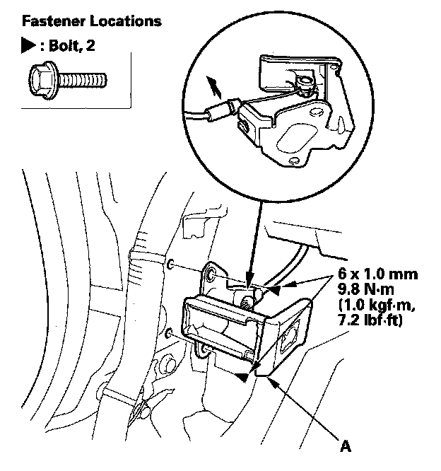

Hood Latch Release: Service and Repair
Hood Release Handle Replacement1. Remove the driver's kick panel

2. Remove the bolts, then remove the hood release handle (A)
3. Disconnect the hood opener cable (B) from the hood release handle. Take care not to kink the cable.
4. Install the hood release handle in the reverse order of removal, and note these items:
- Make sure the hood opener cable is connected properly.
- Make sure the hood opens properly.